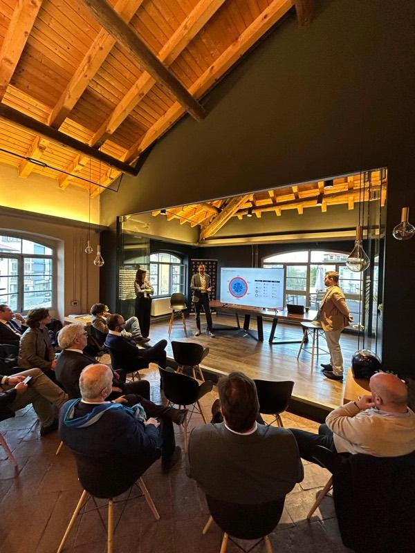
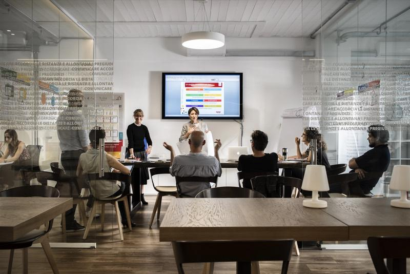
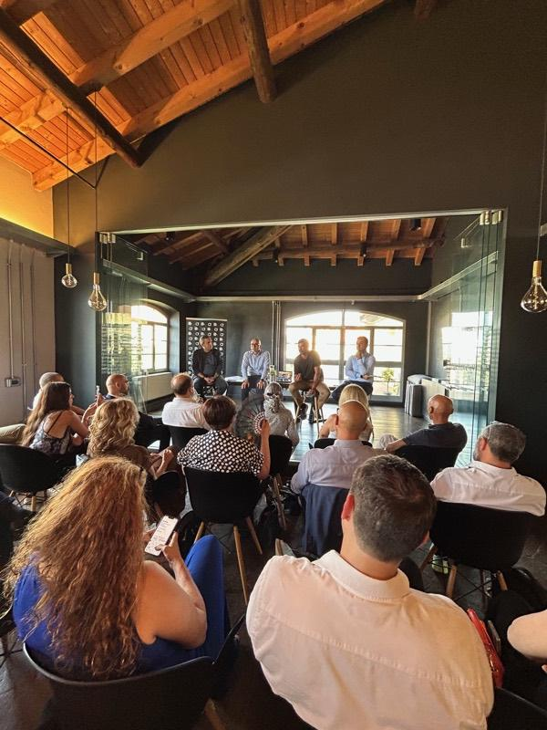
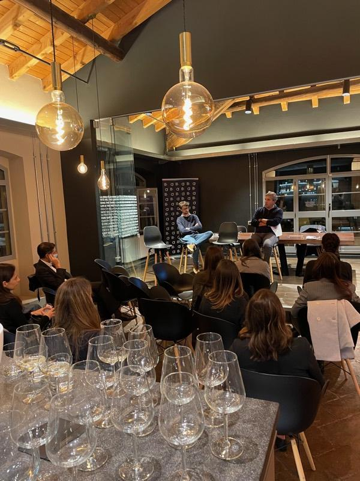
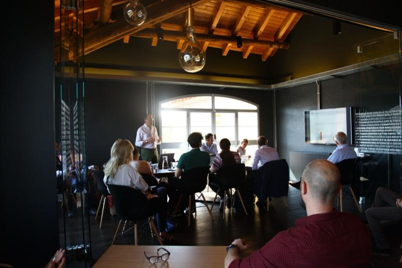

Eventi AI per aziende a Milano
Serate in presenza per imprenditori e responsabili di funzione. Si parte dai processi e dalle persone, prima degli strumenti. Il ciclo dell’autunno 2026 si chiama SIGNALS.
SIGNALS: Decifrare il futuro
Tre incontri NIUEXA sull’intelligenza artificiale in azienda, il 6 ottobre, il 27 ottobre e il 17 novembre 2026, alle 18:30 (Europe/Rome) presso l’Ufficio Libera in Via Rutilia 10/8, 20141 Milano. La richiesta di partecipazione si invia dalla pagina degli incontri SIGNALS.
-
ott 06
La SEO va in pensione, benvenuta AEO/GEO
Come cambia la ricerca quando i clienti chiedono risposte all’AI. Contenuti, fonti e misurazione per una presenza aziendale riconoscibile.
-
ott 27
AI Agent: come rendere efficienti i processi aziendali
Da quale processo conviene partire? Priorità, dati, permessi e indicatori per affidare a un agente AI un primo compito circoscritto e misurarne il valore.
-
nov 17
AI Marketing Agent: come semplificare ed efficientare i processi di marketing
Brief, contenuti per più canali, contatti da seguire: quali attività di marketing affidare a un agente AI mantenendo il controllo su messaggi, dati e approvazioni.
La richiesta di partecipazione non equivale alla conferma del posto.
Cosa aspettarsi
Un tema per serata
Ogni incontro approfondisce un argomento: la visibilità nelle risposte dell’AI, gli agenti AI sui processi aziendali, gli agenti AI nel marketing.
Domande operative
Da quale processo partire, chi decide, cosa misurare prima e dopo. Si parla dei vincoli reali delle imprese, non di prodotti.
Confronto in presenza
Gli incontri si tengono a Milano, in presenza: c’è spazio per parlare con chi affronta le stesse domande in altre aziende.
Eventi passati
-
«Il SEO va in pensione. Il tuo brand è pronto?»
-

«Rendi più efficiente la tua azienda con l’AI»
-

«Rendi più efficiente la tua azienda con l’AI»
-

AI Aperitivo: introduzione al Machine Learning
-

AI Aperitivo: Computer Vision per il business
-

AI Aperitivo: etica nell’intelligenza artificiale
Niuexa fa parte di AUSED, l’associazione dei CIO italiani: Niuexa entra in AUSED.
Partecipare a SIGNALS
Scelga una data e invii la richiesta dalla pagina degli incontri. Per domande sugli incontri scriva a ai@niuexa.ai.